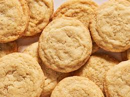

Sugar Cookies

Description:
Sugar cookies are simple to make and delicious to eat. These could not be easier.
Ingredients:
- 1/2 cup unsalted softened butter
- 1/2 cup vanilla sugar
- 1 cup self-rising flour
Steps:
- Preheat oven to 350 degrees F. Grease baking pan.
- In a bown, mix butter until smooth, add sugar and mix till combined. Add in flour and mix until combined.
- Portion dough using spoon or scoop into cookies leaving 2 inches of space between them on the sheet.
- Bake at 350 for 14 minutes or until cooked through
- Allow to cool before serving